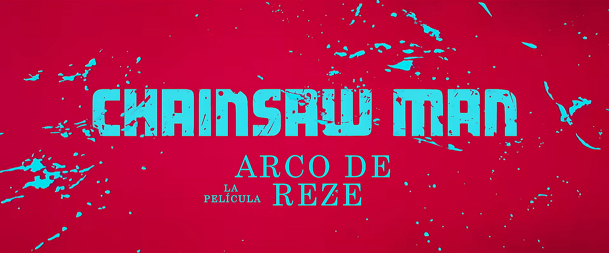
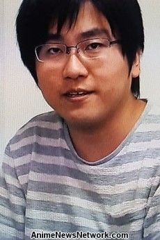
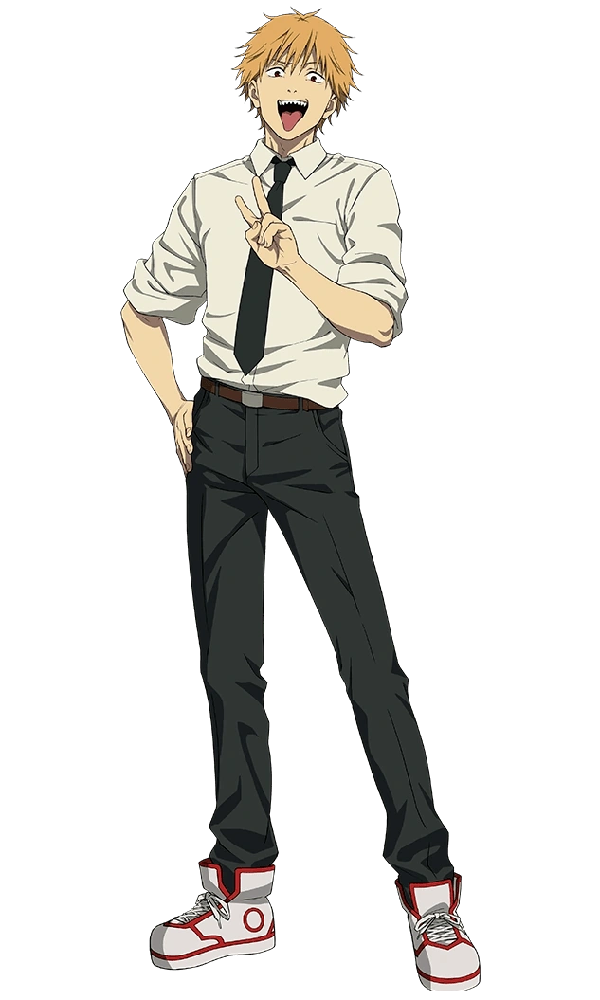
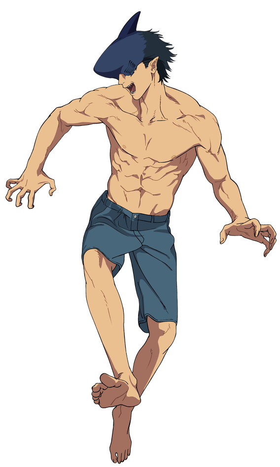
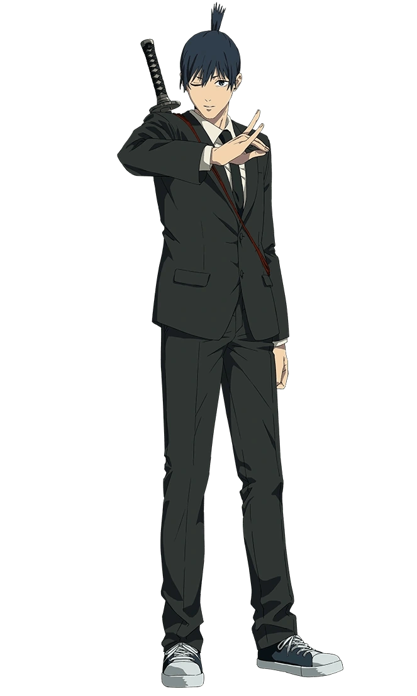
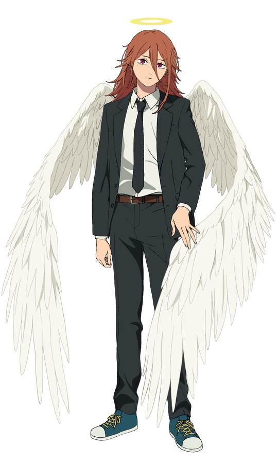

Chainsaw Man Reze Arc
Chainsaw Man Reze Arc, és una pelicula animada per l'estudio de MAPPA, basada en el manga i anime de Chainsaw Man, que segueix les ocurrencies de Denji, un noi amb cor del dimoni motoserra, en aquesta pel·lícula. Denji coneix a Reze, una misteriosa noia que canvia la seva vida. El que comença com una història d’amor es transforma en un conflicte entre humans i dimonis, amb acció intensa i emocions profundes que reflecteixen a la perfecció l’estil únic i visceral de Tatsuki Fujimoto.

Director
Tatsuya Yoshihara

Tatsuya Yoshihara és un director d'anime japonès reconegut per la seva feina en sèries d'acció com Chainsaw Man i Black Clover. El seu estil es caracteritza per una direcció dinàmica i escenes de combat molt fluides, combinades amb una gran atenció als detalls visuals i a la narrativa. La seva manera de construir les històries i els personatges aconsegueix transmetre emocions intenses, fent que cada episodi sigui impactant i memorable per als espectadors.
Personatges principals

Denji
Denji és un jove valent i impulsiu que lluita contra dimonis per sobreviure, combinant habilitat, força i determinació enmig del caos que l’envolta.

Beam
Beam és el dimoni tauró que, tot i la seva naturalesa demoníaca, mostra una gran amistat i lleialtat amb Denji, convertint-se en un aliat inesperat i valuós en les seves batalles.

Reze
Reze és una noia misteriosa i encantadora que amaga un secret perillós sota la seva aparença dolça i innocent, fent que la seva presència sigui tan captivadora com inesperada.

Aki Hayakawa
Aki Hayakawa és un caçador de dimonis i mentor de Denji i Power, que lluita per protegir els humans amb la seva habilitat i compromís.

Angel
Angel Devil és un dimoni amb aparença d'àngel que, tot i la seva naturalesa sinistra, conté una personalitat amable, i capaç de fer grans sacrificis pels seus companys.
Cinemes i Streaming
Valoracions
IMDb
8.2/10
Rotten Tomatoes
91%
Metacritic
85/100
MyAnimeList
8.5/10